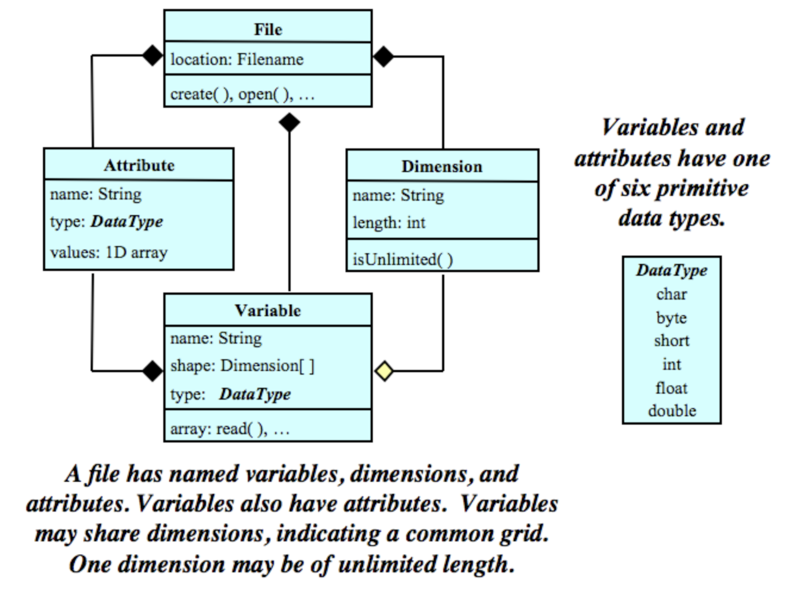

import os
import urllib
import pandas as pd
import numpy as np
import xarray as xr # This is the package we'll explore5 Data Structures and Formats for Large Data
5.1 Learning Objectives
- Learn about the NetCDF data format:
- Characteristics: self-describing, scalable, portable, appendable, shareable, and archivable
- Understand the NetCDF data model: what are dimensions, variables, and attributes
- Advantages and differences between NetCDF and tabular data formats
- Learn how to use the
xarrayPython package to work with NetCDF files:- Describe the core
xarraydata structures, thexarray.DataArrayand thexarray.Dataset, and their components, including data variables, dimensions, coordinates, and attributes - Create
xarray.DataArraysandxarra.DataSetsout of rawnumpyarrays and save them as netCDF files - Load
xarray.DataSetsfrom netCDF files and understand the attributes view - Perform basic indexing, processing, and reduction of
xarray.DataArrays - Convert
pandas.DataFramesintoxarray.DataSets
- Describe the core
5.2 Introduction
Efficient and reproducible data analysis begins with choosing a proper format to store our data, particularly when working with large, complex, multi-dimensional datasets. Consider, for example, the following Earth System Data Cube from Mahecha et al. 2020, which measures nine environmental variables at high resolution across space and time. We can consider this dataset large (high-resolution means we have a big file), complex (multiple variables), and multi-dimensional (each variable is measured along three dimensions: latitude, longitude, and time). Additionally, necessary metadata must accompany the dataset to make it functional, such as units of measurement for variables, information about the authors, and processing software used.

Keeping complex datasets in a format that facilitates access, processing, sharing, and archiving can be at least as important as how we parallelize the code we use to analyze them. In practice, it is common to convert our data from less efficient formats into more efficient ones before we parallelize any processing. In this lesson, we will
familiarize ourselves with the NetCDF data format, which enables us to store large, complex, multi-dimensional data efficiently, and
learn to use the
xarrayPython package to read, process, and create NetCDF files.
5.3 NetCDF Data Format
NetCDF (Network Common Data Form) is a set of software libraries and self-describing, machine-independent data formats that support the creation, access, and sharing of array-oriented scientific data. NetCDF was initially developed at the Unidata Program Center, is supported on almost all platforms, and parsers exist for most scientific programming languages.
The NetCDF documentation outlines that this data format is desgined to be:
Self-describing: Information describing the data contents of the file is embedded within the data file itself. This means that there is a header describing the layout of the rest of the file and arbitrary file metadata.
Scalable: Small subsets of large datasets may be accessed efficiently through netCDF interfaces, even from remote servers.
Portable: A NetCDF file is machine-independent i.e. it can be accessed by computers with different ways of storing integers, characters, and floating-point numbers.
Appendable: Data may be appended to a properly structured NetCDF file without copying the dataset or redefining its structure.
Sharable: One writer and multiple readers may simultaneously access the same NetCDF file.
Archivable: Access to all earlier forms of NetCDF data will be supported by current and future versions of the software.
5.3.1 Data Model
The NetCDF data model is the way that NetCDF organizes data. This lesson will follow the Classic NetCDF Data Model, which is at the core of all netCDF files.
The model consists of three key components: variables, dimensions, and attributes.
Variables are N-dimensional arrays of data. We can think of these as varying/measured/dependent quantities.
Dimensions describe the axes of the data arrays. A dimension has a name and a length. We can think of these as the constant/fixed/independent quantities at which we measure the variables.
Attributes are small notes or supplementary metadata to annotate a variable or the file as a whole.

5.3.2 Metadata Standards
The most commonly used metadata standard for geospatial data is the Climate and Forecast metadata standard, also called the CF conventions.
The CF conventions are specifically designed to promote the processing and sharing of files created with the NetCDF API. Principles of CF include self-describing data (no external tables needed for understanding), metadata equally readable by humans and software, minimum redundancy, and maximum simplicity. (CF conventions FAQ)
The CF conventions provide a unique standardized name and precise description of over 1,000 physical variables. To maximize the reusability of our data, it is best to include a variable’s standardized name as an attribute called standard_name. Variables should also include a units attribute. This attribute should be a string that can be recognized by UNIDATA’s UDUNITS package. In these links you can find:
a list of the units found in the UDUNITS database maintained by the North Carolina Institute for Climate Studies.
5.3.3 Exercise
Let’s do a short practice now that we have reviewed the classic NetCDF model and know a bit about metadata best practices.Part 1
Imagine the following scenario: we have a network of 25 weather stations. They are located in a square grid: starting at 30°0′N 60°0′E, there is a station every 10° North and every 10° East. Each station measures the air temperature at a set time for three days, starting on September 1st, 2022. On the first day, all stations record a temperature of 0°C. On the second day, all temperatures are 1°C, and on the third day, all temperatures are 2°C. What are the variables, dimensions and attributes for this data?
Answer
Variables: There is a single variable being measured: temperature. The variable values can be represented as a 5x5x3 array, with constant values for each day.
Dimensions: This dataset has three dimensions: time, latitude, and longitude. Time indicates when the measurement happened, we can encode it as the dates 2022-09-01, 2022-09-02, and 2022-09-03. The pairs of latitude and longitude values indicate the positions of the weather stations. Latitude has values 30, 40, 50, 60, and 70, measured in degrees North. Longitude has values 60, 70, 80, 90, and 100, measured in degrees East.

Attributes: Let’s divide these into attributes for the variable, the dimensions, and the whole dataset:
- Variable attributes:
- Temperature attributes:
- standard_name: air_temperature
- units: degree_C
- Temperature attributes:
- Dimension attributes:
- Time attributes:
- description: date of measurement
- Latitude attributes:
- standard_name: grid_latitude
- units: degrees_N
- Longitude attributes:
- standard_name: grid_longitude
- units: degree_E
- Time attributes:
- Dataset attributes:
- title: Temperature Measurements at Weather Stations
- summary: an example of NetCDF data format
Part 2
Now imagine we calculate the average temperature over time at each weather station, and we wish to incorporate this data into the same dataset. How will adding the average temperature data change the dataset’s variables, attributes, and dimensions?
Answer
Variables: Now we are measuring two variables: temperature and average temperature. The temperature data stays the same. We can represent the average temperature as a single 5x5 array with value 1 at each cell.
Dimensions: This dataset still has three dimensions: time, latitude, and longitude. The temperature variable uses all three dimensions, and the average temperature variable only uses two (latitude and longitude). This is ok! The dataset’s dimensions are the union of the dimensions of all the variables in the dataset. Variables in the same dataset may have all, some, or no dimensions in common.

Attributes: To begin with, we need to keep all the previous attributes. Notice that the dataset’s title is general enough that we don’t need to update it. The only update we need to do is add the attributes for our new average temperature variable:
- Average temperature attributes:
- standard_name: average_air_temperature
- description: average temperature over three days
Our next step is to see how we can translate all this information into something we can store and handle on our computers.
Going further with
zarr
Zarr is a file storage format for chunked, compressed N-dimensional arrays based on an open source specification. It is very similar to NetCDF. The key is in the “chunked.” Zarr stores chunks of data in separate files, so that parallel operations (like reading and writing data) can be done much, much faster than working with NetCDF. This format is gaining lots of popularity for working with big data.
5.4 xarray
xarray is an open source project and Python package that augments NumPy arrays by adding labeled dimensions, coordinates and attributes. xarray is based on the netCDF data model, making it the appropriate tool to open, process, and create datasets in netCDF format.
5.4.1 xarray.DataArray
The xarray.DataArray is the primary data structure of the xarray package. It is an n-dimensional array with labeled dimensions. We can think of it as representing a single variable in the NetCDF data format: it holds the variable’s values, dimensions, and attributes.
Apart from variables, dimensions, and attributes, xarray introduces one more piece of information to keep track of a dataset’s content: in xarray each dimension has at least one set of coordinates. A dimension’s coordinates indicate the dimension’s values. We can think of the coordinate’s values as the tick labels along a dimension. For example, in our previous exercise about temperature measured in weather stations, latitude is a dimension, and the latitude’s coordinates are 30, 40, 50, 60, and 70 because those are the latitude values at which we are collecting temperature data. In that same exercise, time is a dimension, and its coordinates are 2022-09-1, 2022-09-02, and 2022-09-03.
Here you can read more about the xarray terminology.
5.4.1.1 Create an xarray.DataArray
Let’s suppose we want to make an xarray.DataArray that includes the information from our previous exercise about measuring temperature across three days. First, we import all the necessary libraries.
Variable Values
The underlying data in the xarray.DataArray is a numpy.ndarray that holds the variable values. So we can start by making a numpy.ndarray with our mock temperature data:
# values of a single variable at each point of the coords
temp_data = np.array([np.zeros((5,5)),
np.ones((5,5)),
np.ones((5,5))*2]).astype(int)
temp_dataarray([[[0, 0, 0, 0, 0],
[0, 0, 0, 0, 0],
[0, 0, 0, 0, 0],
[0, 0, 0, 0, 0],
[0, 0, 0, 0, 0]],
[[1, 1, 1, 1, 1],
[1, 1, 1, 1, 1],
[1, 1, 1, 1, 1],
[1, 1, 1, 1, 1],
[1, 1, 1, 1, 1]],
[[2, 2, 2, 2, 2],
[2, 2, 2, 2, 2],
[2, 2, 2, 2, 2],
[2, 2, 2, 2, 2],
[2, 2, 2, 2, 2]]])We could think this is “all” we need to represent our data. But if we stopped at this point, we would need to
remember that the numbers in this array represent the temperature in degrees Celsius (doesn’t seem too bad),
remember that the first dimension of the array represents time, the second latitude and the third longitude (maybe ok), and
keep track of the range of values that time, latitude, and longitude take (not so good).
Keeping track of all this information separately could quickly get messy and could make it challenging to share our data and analyses with others. This is what the netCDF data model and xarray aim to simplify. We can get data and its descriptors together in an xarray.DataArray by adding the dimensions over which the variable is being measured and including attributes that appropriately describe dimensions and variables.
Dimensions and Coordinates
To specify the dimensions of our upcoming xarray.DataArray, we must examine how we’ve constructed the numpy.ndarray holding the temperature data. The diagram below shows how the dimensions of temp_data are ordered: the first dimension is time, the second is latitude, and the third is longitude.

Remember that indexing in 2-dimensional numpy.ndarrays starts at the top-left corner of the array, and it is done by rows first and columns second (like matrices). This is why latitude is the second dimension and longitude the third. From the diagram, we can also see that the coordinates (values of each dimension) are as follow:
- date coordinates are 2022-09-01, 2022-09-02, 2022-09-03
- latitude coordinates are 70, 60, 50, 40, 30 (notice decreasing order)
- longitude coordinates are 60, 70, 80, 90, 100 (notice increasing order)
We add the dimensions as a tuple of strings and coordinates as a dictionary:
# names of the dimensions in the required order
dims = ('time', 'lat', 'lon')
# create coordinates to use for indexing along each dimension
coords = {'time' : pd.date_range("2022-09-01", "2022-09-03"),
'lat' : np.arange(70, 20, -10),
'lon' : np.arange(60, 110, 10)} Attributes
Next, we add the attributes (metadata) for our temperature data as a dictionary:
# attributes (metadata) of the data array
attrs = { 'title' : 'temperature across weather stations',
'standard_name' : 'air_temperature',
'units' : 'degree_c'}Putting It All Together
Finally, we put all these pieces together (data, dimensions, coordinates, and attributes) to create an xarray.DataArray:
# initialize xarray.DataArray
temp = xr.DataArray(data = temp_data,
dims = dims,
coords = coords,
attrs = attrs)
temp<xarray.DataArray (time: 3, lat: 5, lon: 5)> Size: 600B
array([[[0, 0, 0, 0, 0],
[0, 0, 0, 0, 0],
[0, 0, 0, 0, 0],
[0, 0, 0, 0, 0],
[0, 0, 0, 0, 0]],
[[1, 1, 1, 1, 1],
[1, 1, 1, 1, 1],
[1, 1, 1, 1, 1],
[1, 1, 1, 1, 1],
[1, 1, 1, 1, 1]],
[[2, 2, 2, 2, 2],
[2, 2, 2, 2, 2],
[2, 2, 2, 2, 2],
[2, 2, 2, 2, 2],
[2, 2, 2, 2, 2]]])
Coordinates:
* time (time) datetime64[ns] 24B 2022-09-01 2022-09-02 2022-09-03
* lat (lat) int64 40B 70 60 50 40 30
* lon (lon) int64 40B 60 70 80 90 100
Attributes:
title: temperature across weather stations
standard_name: air_temperature
units: degree_cWe can also update the variable’s attributes after creating the object. Notice that each of the coordinates is also an xarray.DataArray, so we can add attributes to them.
# update attributes
temp.attrs['description'] = 'simple example of an xarray.DataArray'
# add attributes to coordinates
temp.time.attrs = {'description':'date of measurement'}
temp.lat.attrs['standard_name']= 'grid_latitude'
temp.lat.attrs['units'] = 'degree_N'
temp.lon.attrs['standard_name']= 'grid_longitude'
temp.lon.attrs['units'] = 'degree_E'
temp<xarray.DataArray (time: 3, lat: 5, lon: 5)> Size: 600B
array([[[0, 0, 0, 0, 0],
[0, 0, 0, 0, 0],
[0, 0, 0, 0, 0],
[0, 0, 0, 0, 0],
[0, 0, 0, 0, 0]],
[[1, 1, 1, 1, 1],
[1, 1, 1, 1, 1],
[1, 1, 1, 1, 1],
[1, 1, 1, 1, 1],
[1, 1, 1, 1, 1]],
[[2, 2, 2, 2, 2],
[2, 2, 2, 2, 2],
[2, 2, 2, 2, 2],
[2, 2, 2, 2, 2],
[2, 2, 2, 2, 2]]])
Coordinates:
* time (time) datetime64[ns] 24B 2022-09-01 2022-09-02 2022-09-03
* lat (lat) int64 40B 70 60 50 40 30
* lon (lon) int64 40B 60 70 80 90 100
Attributes:
title: temperature across weather stations
standard_name: air_temperature
units: degree_c
description: simple example of an xarray.DataArrayAt this point, since we have a single variable, the dataset attributes and the variable attributes are the same.
5.4.1.2 Indexing
An xarray.DataArray allows both positional indexing (like numpy) and label-based indexing (like pandas). Positional indexing is the most basic, and it’s done using Python’s [] syntax, as in array[i,j] with i and j both integers. Label-based indexing takes advantage of dimensions in the array having names and coordinate values that we can use to access data instead of remembering the positional order of each dimension.
As an example, suppose we want to know what was the temperature recorded by the weather station located at 40°0′N 80°0′E on September 1st, 2022. By recalling all the information about how the array is setup with respect to the dimensions and coordinates, we can access this data positionally:
temp[0,1,2]<xarray.DataArray ()> Size: 8B
array(0)
Coordinates:
time datetime64[ns] 8B 2022-09-01
lat int64 8B 60
lon int64 8B 80
Attributes:
title: temperature across weather stations
standard_name: air_temperature
units: degree_c
description: simple example of an xarray.DataArrayOr, we can use the dimensions names and their coordinates to access the same value:
temp.sel(time='2022-09-01', lat=40, lon=80)<xarray.DataArray ()> Size: 8B
array(0)
Coordinates:
time datetime64[ns] 8B 2022-09-01
lat int64 8B 40
lon int64 8B 80
Attributes:
title: temperature across weather stations
standard_name: air_temperature
units: degree_c
description: simple example of an xarray.DataArrayNotice that the result of this indexing is a 1x1 xarray.DataArray. This is because operations on an xarray.DataArray (resp. xarray.DataSet) always return another xarray.DataArray (resp. xarray.DataSet). In particular, operations returning scalar values will also produce xarray objects, so we need to cast them as numbers manually. See xarray.DataArray.item.
More about xarray indexing.
5.4.1.3 Reduction
xarray has implemented several methods to reduce an xarray.DataArray along any number of dimensions. One of the advantages of xarray.DataArray is that, if we choose to, it can carry over attributes when doing calculations. For example, we can calculate the average temperature at each weather station over time and obtain a new xarray.DataArray.
avg_temp = temp.mean(dim = 'time')
# to keep attributes add keep_attrs = True
avg_temp.attrs = {'title':'average temperature over three days'}
avg_temp<xarray.DataArray (lat: 5, lon: 5)> Size: 200B
array([[1., 1., 1., 1., 1.],
[1., 1., 1., 1., 1.],
[1., 1., 1., 1., 1.],
[1., 1., 1., 1., 1.],
[1., 1., 1., 1., 1.]])
Coordinates:
* lat (lat) int64 40B 70 60 50 40 30
* lon (lon) int64 40B 60 70 80 90 100
Attributes:
title: average temperature over three daysMore about xarray computations.
5.4.2 xarray.DataSet
An xarray.DataSet resembles an in-memory representation of a NetCDF file and consists of multiple variables (each being an xarray.DataArray), with dimensions, coordinates, and attributes, forming a self-describing dataset. Attributes can be specific to each variable, each dimension, or they can describe the whole dataset. The variables in an xarray.DataSet can have the same dimensions, share some dimensions, or have no dimensions in common. Let’s see an example of this.
5.4.2.1 Create an xarray.DataSet
Following our previous example, we can create an xarray.DataSet by combining the temperature data with the average temperature data. We also add some attributes that now describe the whole dataset, not only each variable.
# make dictionaries with variables and attributes
data_vars = {'avg_temp': avg_temp,
'temp': temp}
attrs = {'title':'temperature data at weather stations: daily and and average',
'description':'simple example of an xarray.Dataset'}
# create xarray.Dataset
temp_dataset = xr.Dataset( data_vars = data_vars,
attrs = attrs)Take some time to click through the data viewer and read through the variables and metadata in the dataset. Notice the following:
temp_datasetis a dataset with three dimensions (time, latitude, and longitude),tempis a variable that uses all three dimensions in the dataset, andaveg_tempis a variable that only uses two dimensions (latitude and longitude).
temp_dataset<xarray.Dataset> Size: 904B
Dimensions: (lat: 5, lon: 5, time: 3)
Coordinates:
* lat (lat) int64 40B 70 60 50 40 30
* lon (lon) int64 40B 60 70 80 90 100
* time (time) datetime64[ns] 24B 2022-09-01 2022-09-02 2022-09-03
Data variables:
avg_temp (lat, lon) float64 200B 1.0 1.0 1.0 1.0 1.0 ... 1.0 1.0 1.0 1.0
temp (time, lat, lon) int64 600B 0 0 0 0 0 0 0 0 0 ... 2 2 2 2 2 2 2 2
Attributes:
title: temperature data at weather stations: daily and and average
description: simple example of an xarray.Dataset5.4.2.2 Save and Reopen
Finally, we want to save our dataset as a NetCDF file. To do this, specify the file path and use the .nc extension for the file name. Then save the dataset using the to_netcdf method with your file path. Opening NetCDF is similarly straightforward using xarray.open_dataset().
# specify file path: don't forget the .nc extension!
fp = os.path.join(os.getcwd(),'temp_dataset.nc')
# save file
temp_dataset.to_netcdf(fp)
# open to check:
check = xr.open_dataset(fp)
check<xarray.Dataset> Size: 904B
Dimensions: (lat: 5, lon: 5, time: 3)
Coordinates:
* lat (lat) int64 40B 70 60 50 40 30
* lon (lon) int64 40B 60 70 80 90 100
* time (time) datetime64[ns] 24B 2022-09-01 2022-09-02 2022-09-03
Data variables:
avg_temp (lat, lon) float64 200B ...
temp (time, lat, lon) int64 600B ...
Attributes:
title: temperature data at weather stations: daily and and average
description: simple example of an xarray.Dataset5.4.3 Exercise
For this exercise, we will use a dataset including time series of annual Arctic freshwater fluxes and storage terms. The data was produced for the publication Jahn and Laiho, 2020 about changes in the Arctic freshwater budget and is archived at the Arctic Data Center doi:10.18739/A2280504J
url = 'https://arcticdata.io/metacat/d1/mn/v2/object/urn%3Auuid%3A792bfc37-416e-409e-80b1-fdef8ab60033'
msg = urllib.request.urlretrieve(url, "FW_data_CESM_LW_2006_2100.nc")fp = os.path.join(os.getcwd(),'FW_data_CESM_LW_2006_2100.nc')
fw_data = xr.open_dataset(fp)
fw_data<xarray.Dataset> Size: 135kB
Dimensions: (time: 95, member: 11)
Coordinates:
* time (time) float64 760B 2.006e+03 ... 2.1e+03
* member (member) float64 88B 1.0 2.0 ... 10.0 11.0
Data variables: (12/16)
FW_flux_Fram_annual_net (time, member) float64 8kB ...
FW_flux_Barrow_annual_net (time, member) float64 8kB ...
FW_flux_Nares_annual_net (time, member) float64 8kB ...
FW_flux_Davis_annual_net (time, member) float64 8kB ...
FW_flux_BSO_annual_net (time, member) float64 8kB ...
FW_flux_Bering_annual_net (time, member) float64 8kB ...
... ...
Solid_FW_flux_BSO_annual_net (time, member) float64 8kB ...
Solid_FW_flux_Bering_annual_net (time, member) float64 8kB ...
runoff_annual (time, member) float64 8kB ...
netPrec_annual (time, member) float64 8kB ...
Liquid_FW_storage_Arctic_annual (time, member) float64 8kB ...
Solid_FW_storage_Arctic_annual (time, member) float64 8kB ...
Attributes:
creation_date: 02-Jun-2020 15:38:31
author: Alexandra Jahn, CU Boulder, alexandra.jahn@colorado.edu
title: Annual timeseries of freshwater data from the CESM Low W...
description: Annual mean Freshwater (FW) fluxes and storage relative ...
data_structure: The data structure is |Ensemble member | Time (in years)...- How many dimensions does the
runoff_annualvariable have? What are the coordinates for the second dimension of this variable?
Answer
We can see in the object viewer that the runoff_annual variable has two dimensions: time and member, in that order. We can also access the dimensions by calling:
fw_data.runoff_annual.dimsThe second dimensions is member. Near the top of the object viewer, under coordinates, we can see that that member’s coordinates is an array from 1 to 11. We can directly see this array by calling:
fw_data.member- Select the values for the second member of the
netPrec_annualvariable.
Answer
member2 = fw_data.netPrec_annual.sel(member=2)- What is the maximum value of the second member of the
netPrec_annualvariable in the time period 2022 to 2100? Hint.
Answer
Based on our previous answer, this maximum is:
x_max = member2.loc[2022:2100].max()
x_max.item()Notice we had to use item to transform the array into a number.
5.5 Tabular Data and NetCDF
Undoubtedly, tabular data is one of the most popular data formats. In this last section, we will discuss the relation between tabular data and the NetCDF data format and how to transform a pandas.DataFrame into an xarray.DataSet.
5.5.1 Tabular to NetCDF
We assume our starting point is tabular data that meets the criteria for tidy data, which means:
Each column holds a different variable.
Each row holds a different observation.
Take, for example, this tidy data subset from our exercise about weather stations measuring temperature: 
To understand how this will transform into NetCDF format, we first need to identify which columns will act as dimensions and which as variables. We can also think of the values of the dimension columns as the coordinates in the xarray.DataSet. The diagram below shows how these columns transform into variables, dimensions, and coordinates.

Tabular formats like csv do not offer an intrinsic way to encode attributes for the dimensions or variables, this is why we don’t see any attributes in the resulting NetCDF data. One of the most significant advantages of NetCDF is its self-describing properties.
5.5.2 pandas to xarray
What does the previous example look like when working with pandas and xarray?
Let’s work with a csv file containing the previous temperature measurements. Essentially, we need to read this file as a pandas.DataFrame and then use the pandas.DataFrame.to_xarray() method, taking into account that the dimensions of the resulting xarray.DataSet will be formed using the index column(s) of the pandas.DataFrame. In this case, we know the first three columns will be our dimension columns, so we need to group them as a multindex for the pandas.DataFrame. We can do this by using the index_col argument directly when we read in the csv file.
fp = os.path.join(os.getcwd(),'netcdf_temp_data.csv') # specify columns representing dimensions
dimension_columns = [0,1,2]
# read file
temp = pd.read_csv(fp, index_col=dimension_columns)
temp| temperature | |||
|---|---|---|---|
| time | longitude | latitude | |
| 2022-09-01 | 30 | 60 | 0 |
| 70 | 0 | ||
| 40 | 60 | 0 | |
| 70 | 0 | ||
| 2022-09-02 | 30 | 60 | 1 |
| 70 | 1 | ||
| 40 | 60 | 1 | |
| 70 | 1 |
And this is our resulting xarray.DataSet:
temp.to_xarray()<xarray.Dataset> Size: 112B
Dimensions: (time: 2, longitude: 2, latitude: 2)
Coordinates:
* time (time) object 16B '2022-09-01' '2022-09-02'
* longitude (longitude) int64 16B 30 40
* latitude (latitude) int64 16B 60 70
Data variables:
temperature (time, longitude, latitude) int64 64B 0 0 0 0 1 1 1 1For further reading and examples about switching between pandas and xarray you can visit the following:
xarray’s Frequently Asked Questionsxarray’s documentation about working with pandas